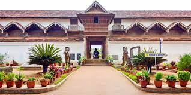
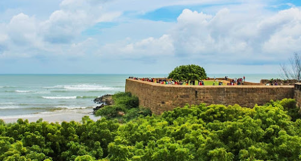

ICCCEM - 2022
ABOUT VENUE

ADDRESS
University College of Engineering Nagercoil,
5C87+PMQ,Industry Estate Konam,
TamilNadu - 629 004,
INDIA.
Directions
AIRPORT
Trivandrum International Airport
Trivandrum International Airport,
Airport Road ,
KERALA.
Distance : 75 KM, (2 Hr)
Tuticorin Airport
Tuticorin Airport(Domestic Airport),
Airport Road, Vagaikulam,
TamilNadu - 628 103.
Distance : 127 KM, (2 Hr 30 Min)
RAILWAY
Nagercoil Junction Railway Station
Nagercoil Junction,
Railway Feeder Road, Kottar,
TamilNadu - 629 001.
Distance : 4 KM, (10 Min)
Nagercoil Town Railway Station
Nagercoil Town ,
Mela Theru Kadai, Nagercoil,
TamilNadu - 629 001.
Distance : 5 KM, (15 Min)
Attractive Places
Kanyakumari Beach
Kanyakumari Beach is one of the most pristine beaches in the waterfront town of Kanyakumari. It is located at the confluence of the Bay of Bengal, Arabian Sea and Indian Ocean. Beauty oozes here in the form of soft golden sand that is overlapped by shimmering waters of the endless sea.

Thirparappu Waterfalls
Thirparappu Waterfalls are waterfalls in Kanyakumari District. It is also known as “Courtallam of Kanyakumari”. The Mahadevar Temple is very near to the waterfalls. The waterfalls is 7 km (4.3 mi) from Kulasekaram, Actually the waterfalls is exactly 34 km from city centre, Nagercoil.

Mathur Aqueduct
The Mathur Aqueduct was built to pass the cultivable water between two mountains. Mathur Aqueduct was built between Aruvikkarai and Mudhalaaru in Paraliyaru River. The aqueduct was built by Former Chief Minister of Tamil Nadu Perunthalaivar Thiru Kamarajar. Mathur aqueduct was South Asia's largest aqueduct. The aqueduct is 1,240 ft (380 m) long, 101 ft (31 m) high with 28 giant pillars. It is 3 km (1.9 mi) from Thiruvattar and 26 km from Nagercoil.

Padmanabhapuram palace
Before centuries, the houses that has all the facilities are known as Palaces. The rulers of states, the Kings resides in such Palaces. Padmanabhapuram Palace was once the official residence of Travancore Kings. Padmanabhapuram Palace was built in Kerala styled Architecture with woods. The palace was built in 18th century by Travancore King Thiru Anizham Thirunal Marthanda Varma. The palace was situated in 6.5 acres in 186 acres fort. The palace is under the control of Kerala Government. The palace is situated just 2 km from Thuckalay.

Udayagiri Fort
Udayagiri Fort was situated just 10 km from Parvathipuram. The fort was situated in 22½ hectares in a place called Puliyoorkurichi. The Fort is maintained by the Ministry of Forests, Government of Tamilnadu.

Vattakkottai
The word 'Vattakkottai' means Circle Fort and is circular in shape. The Fort was constructed along the seashore in East coast. The fort was situated in 3 1/2 acres with compound stones constructed for 25 metres height and constructed by Travancore Army Chief Dilanai. The fort is under the control of Archaeological Department, Government of India. It is situated just 6;km north from Kanyakumari and just 2 km south from Anjugramam.

Chitharal Jain Rock Cut Temple
It is famous for the Rock-cut temple. Hillock at Chitharal has a cave containing Rock-cut sculptures of Thirthankaras and attendant deities carved inside and outside dating back to 9th Century A.D by King Mahendra Varman.

Muttom Beach
Muttom is a village in the Kanyakumari District of the Tamil Nadu, India. It is a well known its beach with some rocks and caves. The major occupation of people in Muttom is fishing. Muttom village is attracted by visitors because of its beach.More than hundreds of people come to the beach every day and spending their time on the beach shore. This beach is known as the best sun set point in the district